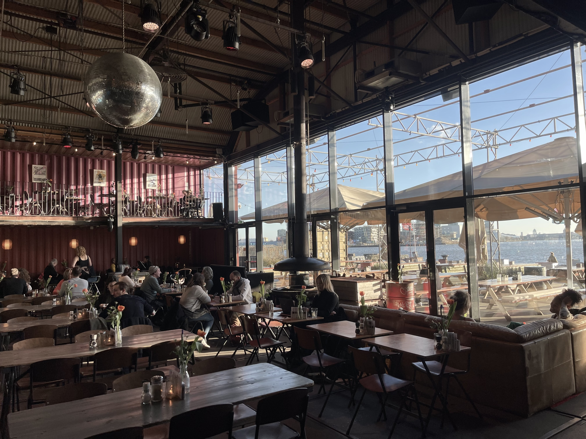

OVER PLLEK
Pllek is een restaurant en evenementenlocatie in Amsterdam, gelegen aan het IJ. Het staat bekend om zijn unieke en duurzame aanpak, waarbij de nadruk ligt op gezond en smaakvol eten in een ontspannen omgeving. Het restaurant is gemaakt van zeecontainers, wat zorgt voor een eigentijdse en industriële sfeer.

Bij Plek staat duurzaamheid erg hoog. Het restaurant zet zich in voor verantwoord koken en gebruikt zorgvuldig geselecteerde ingrediënten van lokale leveranciers. Het menu is niet alleen een feest voor je smaakpapillen, maar ook voor het milieu.
Vanaf het gebruik van biologische producten tot het minimaliseren van voedselverspilling, Plek is toegewijd aan een duurzame en milieuvriendelijke aanpak. Geniet van heerlijk eten terwijl je ook een positieve impact hebt op de wereld om je heen.